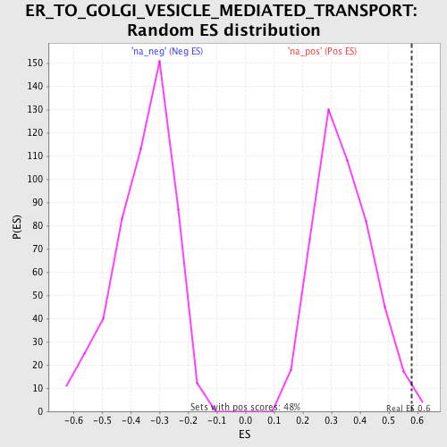

| | | Dataset | GSEA_Cushing_prerank_FC |
| Phenotype | NoPhenotypeAvailable |
| Upregulated in class | na_pos |
| GeneSet | ER_TO_GOLGI_VESICLE_MEDIATED_TRANSPORT |
| Enrichment Score (ES) | 0.57989216 |
| Normalized Enrichment Score (NES) | 1.6901355 |
| Nominal p-value | 0.008368201 |
| FDR q-value | 0.044639904 |
| FWER p-Value | 0.794 |
Table: GSEA Results Summary
 Fig 1: Enrichment plot: ER_TO_GOLGI_VESICLE_MEDIATED_TRANSPORT
Fig 1: Enrichment plot: ER_TO_GOLGI_VESICLE_MEDIATED_TRANSPORT
Profile of the Running ES Score & Positions of GeneSet Members on the Rank Ordered List
| PROBE | GENE SYMBOL | GENE_TITLE | RANK IN GENE LIST | RANK METRIC SCORE | RUNNING ES | CORE ENRICHMENT | | 1 | RAB2A | | | 457 | 0.503 | 0.1772 | Yes |
| 2 | TMX1 | | | 1149 | 0.344 | 0.2776 | Yes |
| 3 | YKT6 | | | 1359 | 0.315 | 0.3931 | Yes |
| 4 | SEC22B | | | 2173 | 0.243 | 0.4457 | Yes |
| 5 | COG3 | | | 3021 | 0.191 | 0.4755 | Yes |
| 6 | ZW10 | | | 3479 | 0.167 | 0.5176 | Yes |
| 7 | ERGIC1 | | | 3806 | 0.152 | 0.5608 | Yes |
| 8 | SEC22A | | | 4399 | 0.129 | 0.5799 | Yes |
| 9 | ERGIC2 | | | 5728 | 0.082 | 0.5390 | No |
| 10 | LMAN1 | | | 5861 | 0.077 | 0.5628 | No |
| 11 | SEC22C | | | 6484 | 0.061 | 0.5527 | No |
| 12 | GOSR2 | | | 7032 | 0.043 | 0.5398 | No |
| 13 | USE1 | | | 8181 | 0.011 | 0.4802 | No |
| 14 | LMAN2L | | | 8657 | -0.003 | 0.4551 | No |
| 15 | ERGIC3 | | | 8672 | -0.004 | 0.4559 | No |
| 16 | STX18 | | | 9248 | -0.022 | 0.4327 | No |
| 17 | BET1 | | | 10981 | -0.065 | 0.3625 | No |
| 18 | NRBP1 | | | 11034 | -0.067 | 0.3865 | No |
Table: GSEA details [plain text format]

Fig 2: ER_TO_GOLGI_VESICLE_MEDIATED_TRANSPORT: Random ES distribution
Gene set null distribution of ES for ER_TO_GOLGI_VESICLE_MEDIATED_TRANSPORT